# A tibble: 409 × 4
percent_incr salary_type annual_salary performance_rating
<dbl> <chr> <dbl> <chr>
1 1 Salaried 1 High
2 1 Salaried 1 Successful
3 1 Salaried 1 High
4 1 Hourly 33987. Successful
5 NA Hourly 34798. High
6 NA Hourly 35360 <NA>
7 NA Hourly 37440 <NA>
8 0 Hourly 37814. <NA>
9 4 Hourly 41101. Top
10 1.2 Hourly 42328 <NA>
# ℹ 399 more rowsExam 1 review
Questions
Blizzard salaries
In 2020, employees of Blizzard Entertainment circulated a spreadsheet to anonymously share salaries and recent pay increases amidst rising tension in the video game industry over wage disparities and executive compensation. (Source: Blizzard Workers Share Salaries in Revolt Over Pay)
The name of the data frame used for this analysis is blizzard_salary and the variables are:
percent_incr: Raise given in July 2020, as percent increase with values ranging from 1 (1% increase) to 21.5 (21.5% increase)salary_type: Type of salary, with levelsHourlyandSalariedannual_salary: Annual salary, in USD, with values ranging from $50,939 to $216,856.performance_rating: Most recent review performance rating, with levelsPoor,Successful,High, andTop. ThePoorlevel is the lowest rating and theToplevel is the highest rating.
The top ten rows of blizzard_salary are shown below:
Question 1
Which of the following is correct? Choose all that apply.
The
blizzard_salarydataset has 399 rows.The
blizzard_salarydataset has 4 columns.Each row represents a Blizzard Entertainment worker who filled out the spreadsheet.
The
percent_incrvariable is numerical and discrete.The
salary_typevariable is numerical.The
annual_salaryvariable is numerical.The
performance_ratingvariable is categorical and ordinal.
Question 2
Figure 1 shows the distributions of annual salaries of hourly and salaried workers.
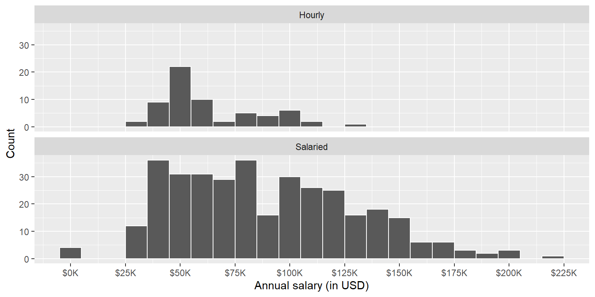
Which distribution of annual salaries has a higher standard deviation?
Hourly workers
Salaried workers
Roughly the same
Question 3
Which of the following alternate plots would also be useful for visualizing the distributions of annual salaries of hourly and salaried workers? Choose all that apply.
a. Box plots
b. Density plots
c. Pie charts
d. Waffle charts
e. Histograms (overlaid)
f. Scatterplots
Questions 4 and 5
Suppose you made the bar plot shown in Figure 2 (a) to visualize the distribution of performance_rating and your classmate made the bar plot shown in Figure 2 (b).
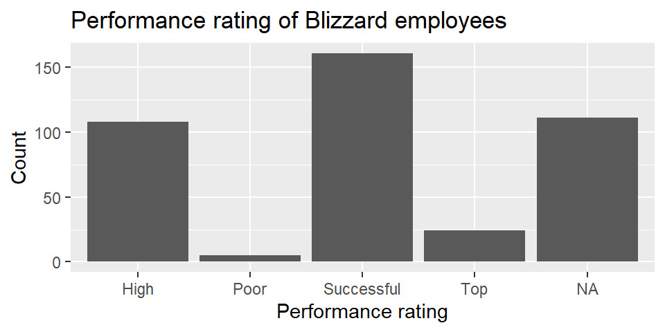
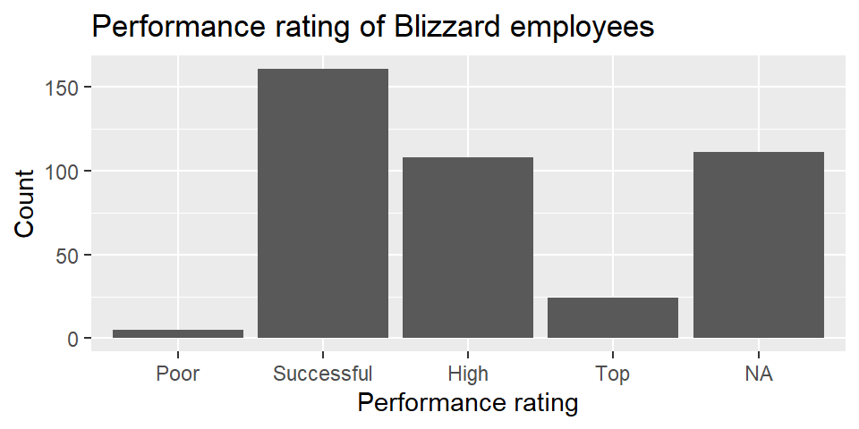
You made your bar plot without transforming the data in any way, while your friend did first transform the data with code like the following:
blizzard_salary <- blizzard_salary |>
_(1)_(performance_rating = fct_relevel(performance_rating, _(2)_))Question 4: What goes in the blank (1)?
arrange()filter()mutate()summarize()
Question 5: What goes in the blank (2)?
"Poor", "Successful", "High", "Top""Successful", "High", "Top""Top", "High", "Successful", "Poor"Poor, Successful, High, Top
Questions 6 - 8
Finally, another classmate creates the following two plots.
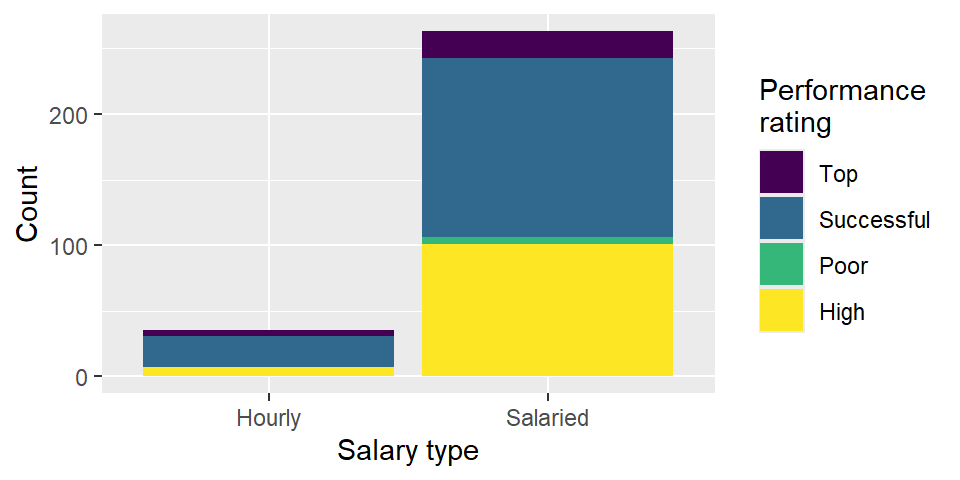
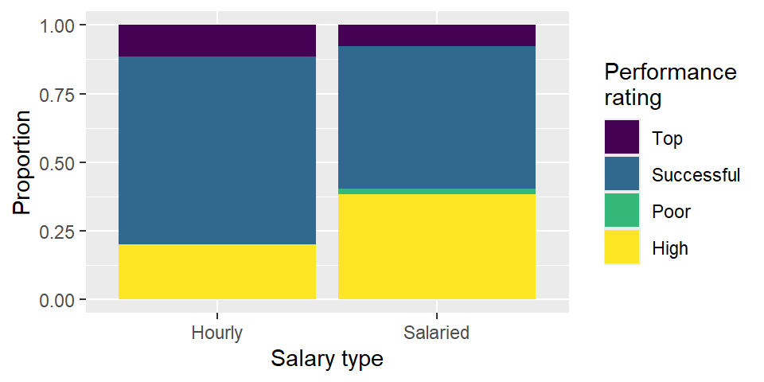
Question 6: Your teammate asks you for help deciding which one to use in the final report for visualizing the relationship between performance rating and salary type. In 1-3 sentences, help them make a decision and justify your choice.
Question 7: A friend with a keen eye points out that the number of observations in Figure 3 (a) seems lower than the total number of observations in blizzard_salary. What might be going on here?
Question 8: Below are the proportions of performance ratings for hourly and salaried workers. Place these values in the corresponding segments in Figure 3 (b).
# A tibble: 4 × 3
performance_rating Hourly Salaried
<chr> <dbl> <dbl>
1 High 0.2 0.384
2 Successful 0.686 0.521
3 Top 0.114 0.0760
4 Poor 0 0.0190Questions 9 and 10
The table below shows the distribution of salary_type and performance_rating.
# A tibble: 2 × 6
salary_type Poor Successful High Top `NA`
<chr> <int> <int> <int> <int> <int>
1 Hourly NA 24 7 4 28
2 Salaried 5 137 101 20 83The pipeline below produces a data frame with a fewer number of rows than blizzard_salary.
blizzard_salary |>
filter(salary_type _(1)_ "Hourly" _(2)_ performance_rating == "Poor") |>
_(3)_(annual_salary)# A tibble: 5 × 4
percent_incr salary_type annual_salary performance_rating
<dbl> <chr> <dbl> <chr>
1 0 Salaried 80000 Poor
2 3 Salaried 83000 Poor
3 0 Salaried 116000 Poor
4 0 Salaried 135219 Poor
5 0 Salaried 147500 Poor Question 9: Which of the following goes in blanks (1) and (2)?
| (1) | (2) | |
|---|---|---|
| a. | != |
| |
| b. | == |
& |
| c. | != |
& |
| d. | == |
| |
Question 10: Which function or functions go into blank (3)?
arrange()mutate()order()sort()
Question 11
Below is some code and its output.
```{r}
#| label: plot-blizzard
ggplot(blizzard_salary,aes(x=performance_rating,y=percent_incr))+geom_boxplot()
labs(x="Performance rating", y = "Percent increase")
```Warning: Removed 39 rows containing non-finite outside the scale range
(`stat_boxplot()`).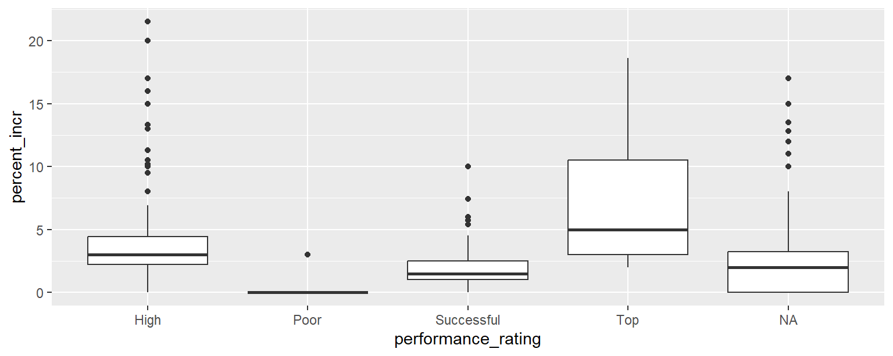
<ggplot2::labels> List of 2
$ x: chr "Performance rating"
$ y: chr "Percent increase"Part 1: List at least 5 things that should be fixed or improved in the code.
Part 2: What is the cause of the warning and what does it mean?
Penguins
The penguins data set includes measurements for penguin species, including: flipper length, body mass, bill dimensions, and sex. The following table summarizes information on which species of penguins (Adelie, Gentoo, and Chinstrap) live on which islands (Biscoe, Dream, or Torgersen).
| Island | Adelie | Gentoo | Chinstrap | Total |
|---|---|---|---|---|
| Biscoe | 44 | 124 | 0 | 168 |
| Dream | 56 | 0 | 68 | 124 |
| Torgersen | 52 | 0 | 0 | 52 |
| Total | 152 | 124 | 68 | 344 |
Question 12
Which of the following plots is the result of the following code?
ggplot(penguins, aes(x = island, fill = species)) +
geom_bar()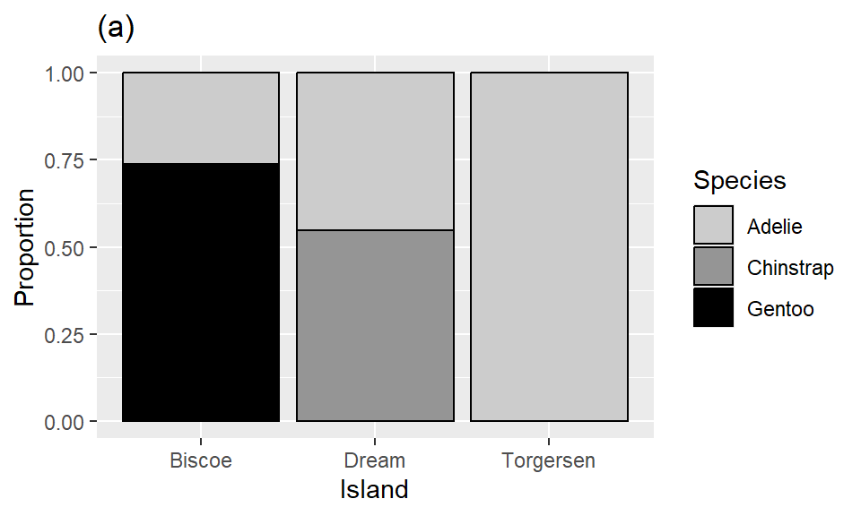
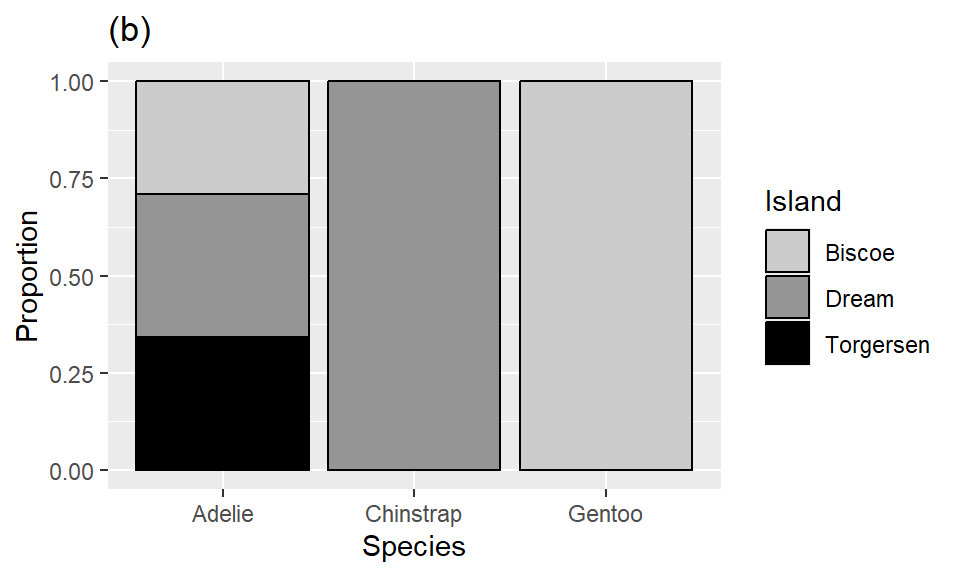
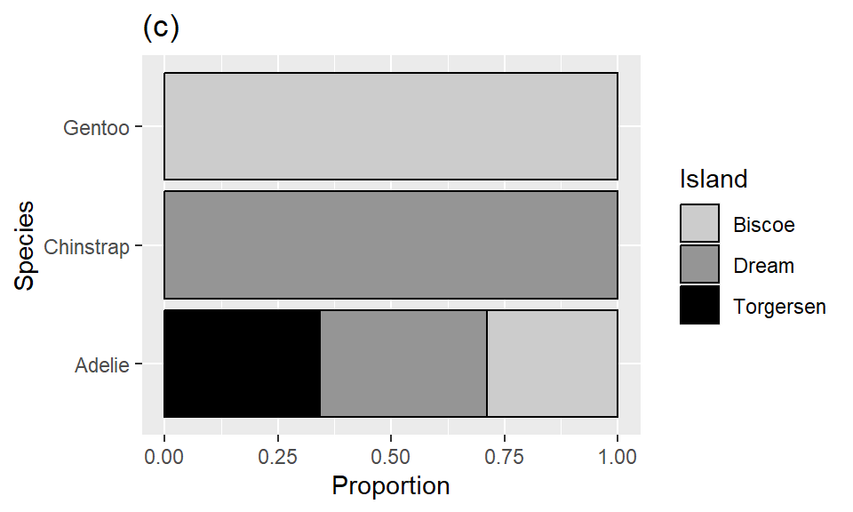
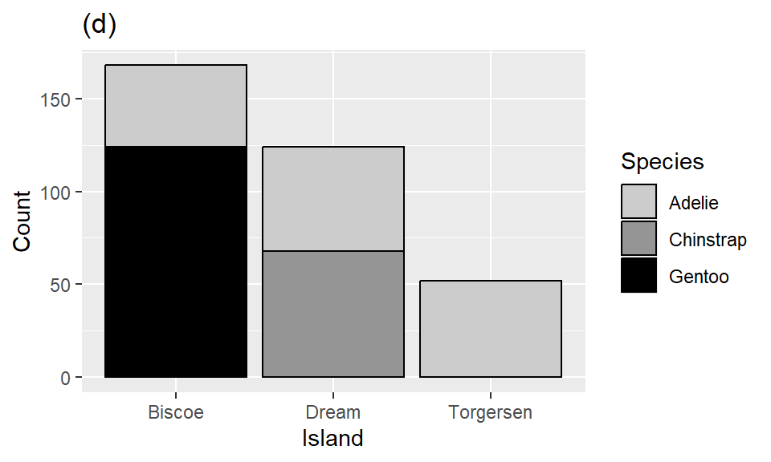
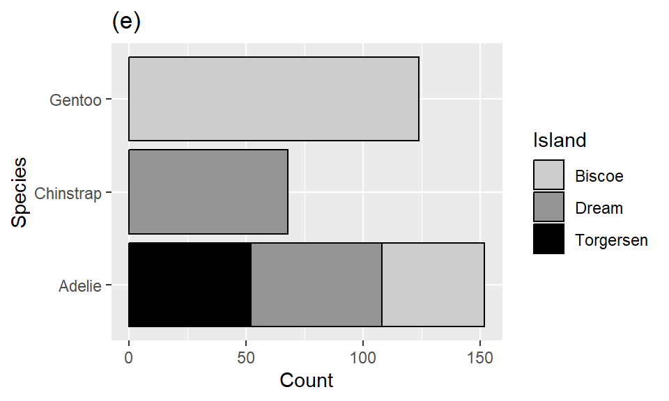
NYC Flights
The flights dataset includes characteristics of all flights departing from New York City airports (JFK, LGA, EWR) in 2013. Below is a peek at the first ten rows of the flights data.
# A tibble: 336,776 × 19
year month day arr_delay carrier dep_time sched_dep_time dep_delay
<int> <int> <int> <dbl> <chr> <int> <int> <dbl>
1 2013 1 1 11 UA 517 515 2
2 2013 1 1 20 UA 533 529 4
3 2013 1 1 33 AA 542 540 2
4 2013 1 1 -18 B6 544 545 -1
5 2013 1 1 -25 DL 554 600 -6
6 2013 1 1 12 UA 554 558 -4
7 2013 1 1 19 B6 555 600 -5
8 2013 1 1 -14 EV 557 600 -3
9 2013 1 1 -8 B6 557 600 -3
10 2013 1 1 8 AA 558 600 -2
# ℹ 336,766 more rows
# ℹ 11 more variables: arr_time <int>, sched_arr_time <int>, flight <int>,
# tailnum <chr>, origin <chr>, dest <chr>, air_time <dbl>, distance <dbl>,
# hour <dbl>, minute <dbl>, time_hour <dttm>Question 13
Based on this output, which of the following must be true about the flights data frame? Select all that are true.
The
flightsdata frame is atibble.The
flightsdata frame has 10 rows.The
flightsdata frame has 8 columns.The
carriervariable in theflightsdata frame is a character variable.There are no missing data in the
flightsdata frame.
Question 14
Which of the following pipelines produce(s) the output shown below? Select all that apply.
# A tibble: 336,776 × 5
arr_delay carrier year month day
<dbl> <chr> <int> <int> <int>
1 1272 HA 2013 1 9
2 1127 MQ 2013 6 15
3 1109 MQ 2013 1 10
4 1007 AA 2013 9 20
5 989 MQ 2013 7 22
6 931 DL 2013 4 10
7 915 DL 2013 3 17
8 895 DL 2013 7 22
9 878 AA 2013 12 5
10 875 MQ 2013 5 3
# ℹ 336,766 more rowsa.
flights |>
select(arr_delay, carrier, year, month, day) |>
arrange(desc(arr_delay))b.
flights |>
select(arr_delay, carrier, year, month, day) |>
arrange(arr_delay)c.
flights |>
select(arr_delay, carrier, year, month, day) |>
arrange(year)d.
flights |>
arrange(desc(arr_delay)) |>
select(arr_delay, carrier, year, month, day)e.
flights |>
arrange(desc(arr_delay)) |>
select(day, month, year, arr_delay, carrier)Countries and populations
We have a small dataset of six countries and their populations:
# A tibble: 6 × 2
country population
<chr> <dbl>
1 Curacao 150
2 Ecuador 18001
3 Iraq 44496.
4 New Zealand 5124.
5 Palau 18.0
6 United States 333288. And another small dataset of five countries and the continent they’re in:
# A tibble: 5 × 3
entity code continent
<chr> <chr> <chr>
1 Angola AGO Africa
2 Curacao CUW North America
3 Ecuador ECU South America
4 Iraq IRQ Asia
5 New Zealand NZL Oceania You join the two datasets with the following:
population |>
left_join(continents, by = join_by(country == entity))Question 15
How many rows will the resulting data frame have?
- 4
- 5
- 6
- 7
- 8
Question 16
What will be the columns of the resulting data frame?
country,populationcountry,population,code,continententity,code,continententity,population,code,continentcountry,entity,population,code,continent
Duke Forest houses
The duke_forest dataset includes information on prices and various other features (number of bedrooms, bathrooms, area, year built, type of cooling, type of heating, etc.) of houses in the Duke Forest neighborhood of Durham, NC.
Rows: 98
Columns: 13
$ address <chr> "1 Learned Pl, Durham, NC 27705", "1616 Pinecrest Rd, Durha…
$ price <dbl> 1520000, 1030000, 420000, 680000, 428500, 456000, 1270000, …
$ bed <dbl> 3, 5, 2, 4, 4, 3, 5, 4, 4, 3, 4, 4, 3, 5, 4, 5, 3, 4, 4, 3,…
$ bath <dbl> 4.0, 4.0, 3.0, 3.0, 3.0, 3.0, 5.0, 3.0, 5.0, 2.0, 3.0, 3.0,…
$ area <dbl> 6040, 4475, 1745, 2091, 1772, 1950, 3909, 2841, 3924, 2173,…
$ type <chr> "Single Family", "Single Family", "Single Family", "Single …
$ year_built <dbl> 1972, 1969, 1959, 1961, 2020, 2014, 1968, 1973, 1972, 1964,…
$ heating <chr> "Other, Gas", "Forced air, Gas", "Forced air, Gas", "Heat p…
$ cooling <fct> central, central, central, central, central, central, centr…
$ parking <chr> "0 spaces", "Carport, Covered", "Garage - Attached, Covered…
$ lot <dbl> 0.97, 1.38, 0.51, 0.84, 0.16, 0.45, 0.94, 0.79, 0.53, 0.73,…
$ hoa <chr> NA, NA, NA, NA, NA, NA, NA, NA, NA, NA, NA, NA, NA, NA, NA,…
$ url <chr> "https://www.zillow.com/homedetails/1-Learned-Pl-Durham-NC-…The following summary table gives us some information about whether homes in this data set have garages and when they were built.
| Built earlier than 1950 | Built in 1950 or later | |
|---|---|---|
| Garage | 5 | 33 |
| No garage | 3 | 57 |
The pipeline below produces a data frame with a fewer number of rows than duke_forest.
duke_forest |>
filter(parking == "Garage" _(1)_ year_built _(2)_ 1950) |>
select(parking, year_built, price, area) |>
_(3)_(price_per_sqfeet = price / area)# A tibble: 5 × 5
parking year_built price area price_per_sqfeet
<chr> <dbl> <dbl> <dbl> <dbl>
1 Garage 1945 900000 2933 307.
2 Garage 1938 265000 1300 204.
3 Garage 1934 600000 2514 239.
4 Garage 1941 412500 1661 248.
5 Garage 1940 105000 1094 96.0Question 17
Which of the following goes in blanks (1) and (2)?
| (1) | (2) | |
|---|---|---|
| a. | & |
< |
| b. | | |
< |
| c. | & |
>= |
| d. | | |
>= |
| e. | & |
!= |
Question 18
Which function or functions go into blank (3)? Select all that apply.
arrange()mutate()filter()summarize()slice()
Law & Order
You’ve heard of the tidyverse, now let’s visit the Law & Order-verse. Doink doink!1
Law & Order is a police procedural and legal drama television series that has been running since the 1990s. The Law & Order franchise includes a number of series such as Law & Order, Law & Order: SVU, Law & Order: Criminal Intent, etc.
You will work with data on average ratings for each season of three series from the Law & Order-verse. Below is a peek at the first ten rows of the Law & Order data.
# A tibble: 52 × 9
season title year month day av_rating genre_1 genre_2 genre_3
<dbl> <chr> <dbl> <dbl> <dbl> <dbl> <chr> <chr> <chr>
1 1 Law & Order 1990 12 31 7.77 Crime Drama Mystery
2 2 Law & Order 1992 1 4 7.64 Crime Drama Mystery
3 3 Law & Order 1993 1 27 7.80 Crime Drama Mystery
4 4 Law & Order 1994 1 13 7.79 Crime Drama Mystery
5 5 Law & Order 1995 1 13 7.81 Crime Drama Mystery
6 6 Law & Order 1996 2 2 8.01 Crime Drama Mystery
7 7 Law & Order 1997 2 14 7.90 Crime Drama Mystery
8 8 Law & Order 1998 1 22 7.83 Crime Drama Mystery
9 9 Law & Order 1999 2 9 7.88 Crime Drama Mystery
10 10 Law & Order 2000 1 30 7.82 Crime Drama Mystery
# ℹ 42 more rowsThe plot below shows the distributions of average ratings of various Law & Order series across seasons.
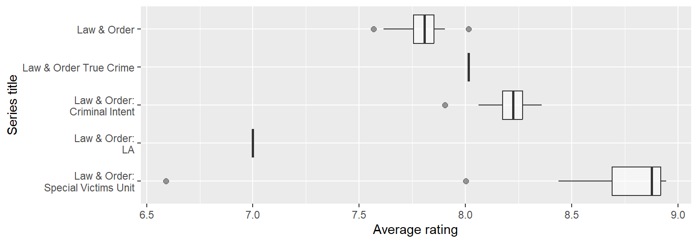
Question 19
Based on the information from the side-by-side box plots, fill in the legend of the plot below with Law & Order series titles.
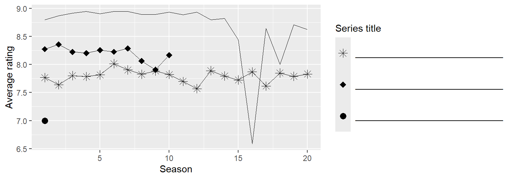
Question 20
The following code calculates the standard deviations of average season ratings of the five Law & Order series. Unfortunately, the output is partially erased and replaced with blanks.
lo_titles <- c("Law & Order", "Law & Order: Criminal Intent", "Law & Order: SVU")
law_and_order |>
filter(title %in% lo_titles) |>
group_by(title) |>
summarize(mean_av_rating = mean(av_rating), sd_av_rating = sd(av_rating))# A tibble: 5 × 3
title mean_av_rating sd_av_rating
<chr> <dbl> <dbl>
1 Law & Order _(1)_ 0.106
2 Law & Order: Criminal Intent 8.20 0.129
4 Law & Order: SVU 8.67 _(2)_Based on the visualizations you’ve seen of these data so far, which of the following is true about the blanks in the output? Select all that are true.
The mean of average ratings (Blank 1) of Law & Order seasons is lower than the other two means.
The mean of average ratings (Blank 1) of Law & Order seasons is higher than the other two means.
The standard deviation of average ratings of Law & Order: SVU seasons (Blank 2) is lower than the other two standard deviations.
The standard deviation of average ratings of Law & Order: SVU seasons (Blank 2) is higher than the other two standard deviations.
The standard deviation of average ratings of Law & Order: SVU seasons (Blank 2) is between the other two standard deviations.
Romance and comedy
Finally, we focus on romance and comedy shows. We first filter the dataset for any shows that have romance or comedy as their genre (genre_1, genre_2, or genre_3) and then remove shows that have both of these genre labels. For the next two questions, we focus on these shows that we identify as either romance or comedy. We then calculate the mean of the average season ratings for each show, to obtain a single “mean average rating” value per show.
The plot below shows the distributions of mean average ratings of seasons of comedy and romance shows.
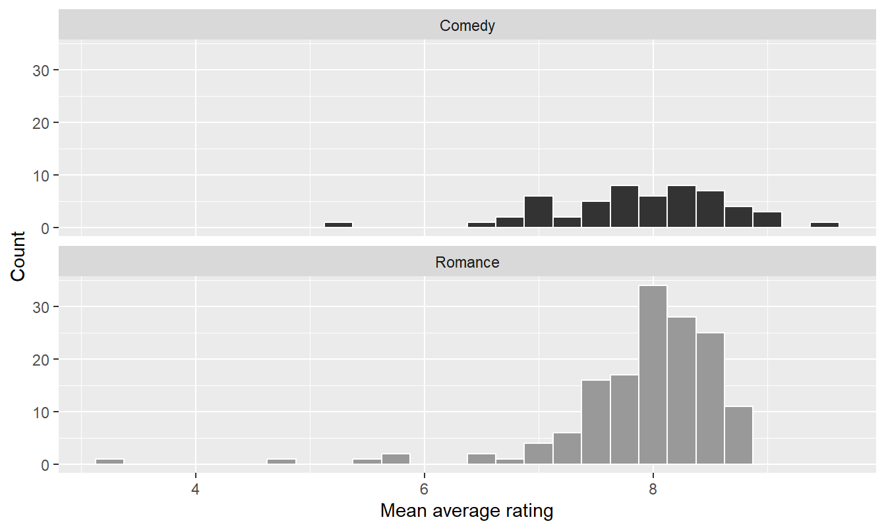
Question 21
Which of the following statements is true about these distributions? Select all that are true.
- Mean average ratings of romance shows are bimodal.
- Mean average ratings of comedy are unimodal.
- Mean average ratings of romance shows is left skewed.
- Mean average ratings of comedy shows is right skewed.
- There are more romance shows than comedy shows.
IMDB
The data for the next few questions come from the Internet Movie Database (IMDB). Specifically, the data are a random sample of movies released between 1980 and 2020.
The name of the data frame used for this analysis is movies, and it contains the variables shown in Table 1.
movies
| Variable | Description |
|---|---|
name |
name of the movie |
rating |
rating of the movie (R, PG, etc.) |
genre |
main genre of the movie. |
runtime |
duration of the movie |
year |
year of release |
release_date |
release date (YYYY-MM-DD) |
release_country |
release country |
score |
IMDB user rating |
votes |
number of user votes |
director |
the director |
writer |
writer of the movie |
star |
main actor/actress |
country |
country of origin |
budget |
the budget of a movie (some movies don’t have this, so it appears as 0) |
gross |
revenue of the movie |
company |
the production company |
The first thirty rows of the movies data frame are shown in Table 2, with variable types suppressed (since we’ll ask about them later).
First 30 rows of movies, with variable types suppressed.
# A tibble: 500 × 16
name score runtime genre rating release_country release_date
1 Blue City 4.4 83 mins Action R United States 1986-05-02
2 Winter Sleep 8.1 196 Drama Not Rated Turkey 2014-06-12
3 Rang De Basan… 8.1 167 Comedy Not Rated United States 2006-01-26
4 Pokémon Detec… 6.6 104 Action PG United States 2019-05-10
5 A Bad Moms Ch… 5.6 104 Comedy R United States 2017-11-01
6 Replicas 5.5 107 Drama PG-13 United States 2019-01-11
7 Windy City 5.8 103 Drama R Uruguay 1986-01-01
8 War for the P… 7.4 140 Action PG-13 United States 2017-07-14
9 Tales from th… 6.4 98 Crime R United States 1995-05-24
10 Fire with Fire 6.5 103 Drama PG-13 United States 1986-05-09
11 Raising Helen 6 119 Comedy PG-13 United States 2004-05-28
12 Feeling Minne… 5.4 99 Comedy R United States 1996-09-13
13 The Babe 5.9 115 Biography PG United States 1992-04-17
14 The Real Blon… 6 105 Comedy R United States 1998-02-27
15 To vlemma tou… 7.6 176 Drama Not Rated United States 1997-11-01
16 Going the Dis… 6.3 102 Comedy R United States 2010-09-03
17 Jung on zo 6.8 103 Action R Hong Kong 1993-06-24
18 Rita, Sue and… 6.5 93 Comedy R United Kingdom 1987-05-29
19 Phone Booth 7 81 Crime R United States 2003-04-04
20 Happy Death D… 6.6 96 Comedy PG-13 United States 2017-10-13
21 Barely Legal 4.7 90 Comedy R Thailand 2006-05-25
22 Three Kings 7.1 114 Action R United States 1999-10-01
23 Menace II Soc… 7.5 97 Crime R United States 1993-05-26
24 Four Rooms 6.8 98 Comedy R United States 1995-12-25
25 Quartet 6.8 98 Comedy PG-13 United States 2013-03-01
26 Tape 7.2 86 Drama R Denmark 2002-07-12
27 Marked for De… 6 93 Action R United States 1990-10-05
28 Congo 5.2 109 Action PG-13 United States 1995-06-09
29 Stop-Loss 6.4 112 Drama R United States 2008-03-28
30 Con Air 6.9 115 Action R United States 1997-06-06
budget gross votes year director writer star
1 10000000 6947787 1100 1986 Michelle Manning Ross Macdona… Judd Nelson
2 NA 4018705 48000 2014 Nuri Bilge Ceyl… Ebru Ceylan Haluk Bilgin…
3 NA 10800778 115000 2006 Rakeysh Ompraka… Renzil D'Sil… Aamir Khan
4 150000000 433921300 146000 2019 Rob Letterman Dan Hernandez Ryan Reynolds
5 28000000 130560428 46000 2017 Jon Lucas Jon Lucas Mila Kunis
6 30000000 9330075 34000 2018 Jeffrey Nachman… Chad St. John Keanu Reeves
7 NA 343890 262 1984 Armyan Bernstein Armyan Berns… John Shea
8 150000000 490719763 235000 2017 Matt Reeves Mark Bomback Andy Serkis
9 6000000 11837928 7400 1995 Rusty Cundieff Rusty Cundie… Clarence Wil…
10 NA 4636169 1500 1986 Duncan Gibbins Bill Phillips Craig Sheffer
11 50000000 49718611 36000 2004 Garry Marshall Patrick J. C… Kate Hudson
12 NA 3124440 11000 1996 Steven Baigelman Steven Baige… Keanu Reeves
13 NA 19930973 9300 1992 Arthur Hiller John Fusco John Goodman
14 NA 83488 3900 1997 Tom DiCillo Tom DiCillo Matthew Modi…
15 NA NA 6400 1995 Theodoros Angel… Theodoros An… Harvey Keitel
16 32000000 42059111 57000 2010 Nanette Burstein Geoff LaTuli… Drew Barrymo…
17 NA 3741869 6100 1993 Kirk Wong Tin Nam Chun Jackie Chan
18 NA 124167 3600 1987 Alan Clarke Andrea Dunbar Siobhan Finn…
19 13000000 97837138 255000 2002 Joel Schumacher Larry Cohen Colin Farrell
20 4800000 125479266 124000 2017 Christopher Lan… Scott Lobdell Jessica Rothe
21 NA 83439 5900 2003 David Mickey Ev… David H. Ste… Erik von Det…
22 75000000 107752036 163000 1999 David O. Russell John Ridley George Cloon…
23 3500000 27912072 54000 1993 Albert Hughes Allen Hughes Tyrin Turner
24 4000000 4257354 100000 1995 Directors Allison Ande… Tim Roth
25 11000000 59520298 19000 2012 Dustin Hoffman Ronald Harwo… Maggie Smith
26 100000 515900 19000 2001 Richard Linklat… Stephen Belb… Ethan Hawke
27 12000000 57968936 21000 1990 Dwight H. Little Michael Grais Steven Seagal
28 50000000 152022101 43000 1995 Frank Marshall Michael Cric… Laura Linney
29 25000000 11212953 20000 2008 Kimberly Peirce Mark Richard Ryan Phillip…
30 75000000 224012234 282000 1997 Simon West Scott Rosenb… Nicolas Cage
# ℹ 470 more rows
# ℹ 2 more variables: company, countryQuestion 22
The name and runtime variables are shown below, with the variable types suppressed.
# A tibble: 500 × 2
name runtime
1 Blue City 83 mins
2 Winter Sleep 196
3 Rang De Basanti 167
4 Pokémon Detective Pikachu 104
5 A Bad Moms Christmas 104
6 Replicas 107
# ℹ 494 more rowsWhat is the type of the runtime variable?
Character
Double
Factor
Integer
Logical
Question 23
Suppose you want a visualization that shows the number of movies in the sample in each genre. Your first attempt is as follows.
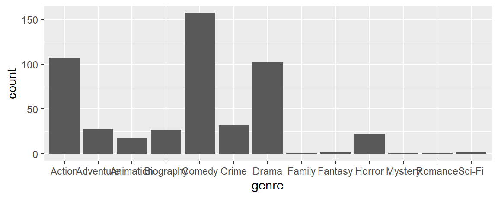
A friend of yours says that the visualization is difficult to read and they suggest using the following visualization instead.
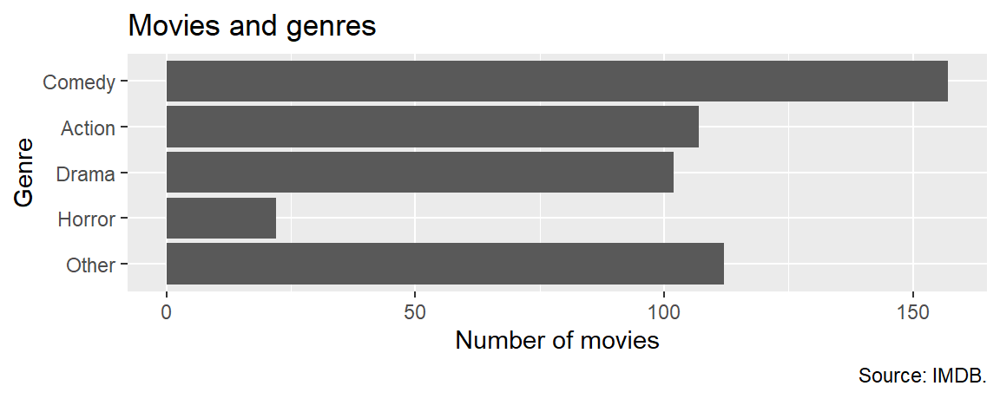
Which of the following modifications would your friend have made to your code to create their version? Select all that apply.
Combine movies in genres other than Comedy, Drama, Action, and Horror into a new level called
"Other".Reorder the levels in descending order of numbers of observations, except for the
"Other"level.Map
genreto theyaesthetic.Add a title, x and y-axis labels, and a caption.
Filter out all moves in genres other than Comedy, Drama, Action, and Horror before plotting.
Question 24
Which of the following is TRUE about the code and its result? Select all that are true.
movies |>
count(rating, genre) |>
pivot_wider(names_from = genre, values_from = n, values_fill = 0)# A tibble: 6 × 6
rating Other Drama Action Comedy Horror
<fct> <int> <int> <int> <int> <int>
1 G 5 1 1 1 0
2 PG 38 13 10 18 0
3 PG-13 19 25 35 35 0
4 R 45 50 57 96 21
5 NC-17 1 2 0 1 0
6 Not Rated 4 11 4 6 1The code counts how many movies are in each rating and genre combination.
The code sorts the results in descending order.
Each row of the output is a movie.
The output shows that there are six distinct ratings in the dataset.
The code reduces the number of variables and observations in the
moviesdata frame to six.
Footnotes
“Doink doink” is the scene and episode introductory sound on the Law & Order series. If you’ve never heard it, you’re not at any disadvantage for the exam. If you’ve ever heard it, good luck getting it out of your head!↩︎